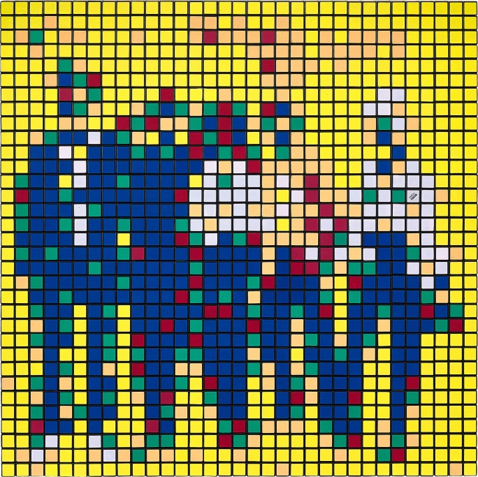
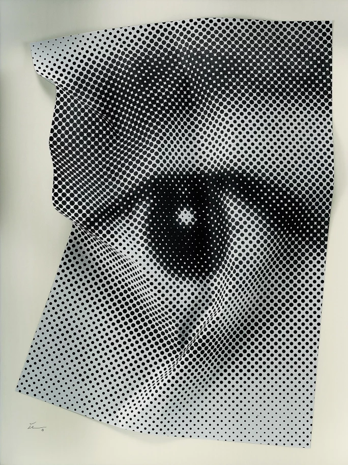
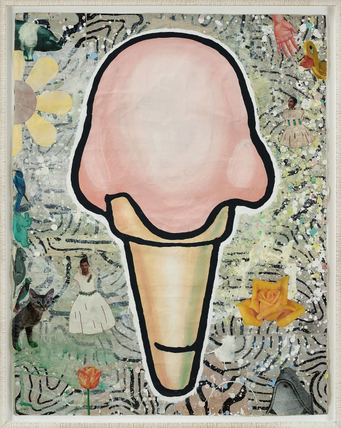
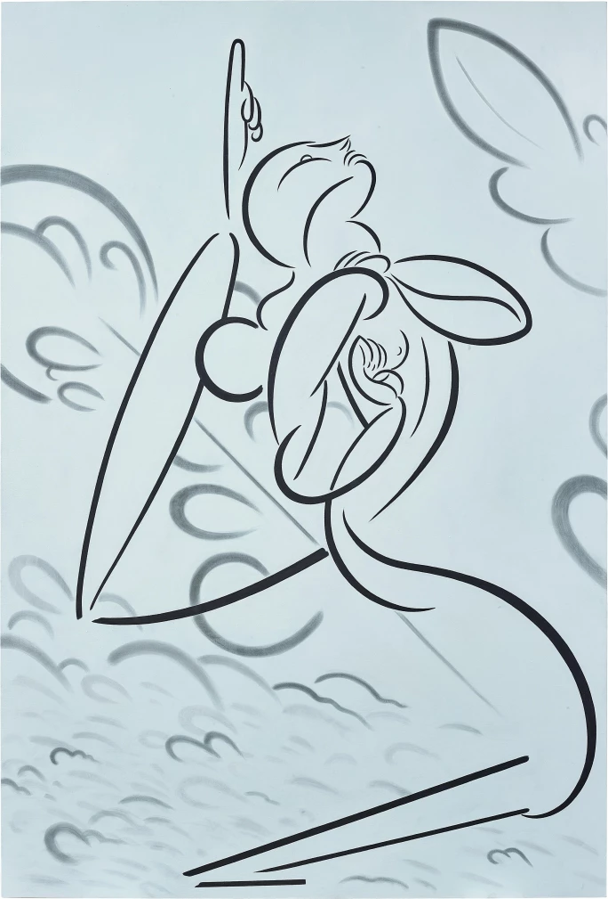
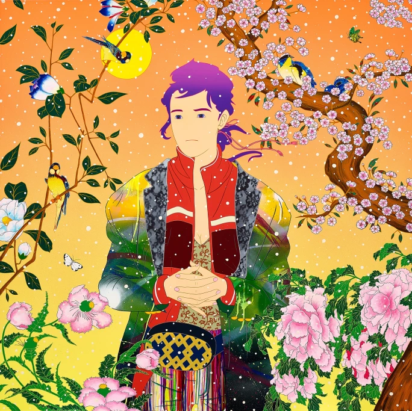
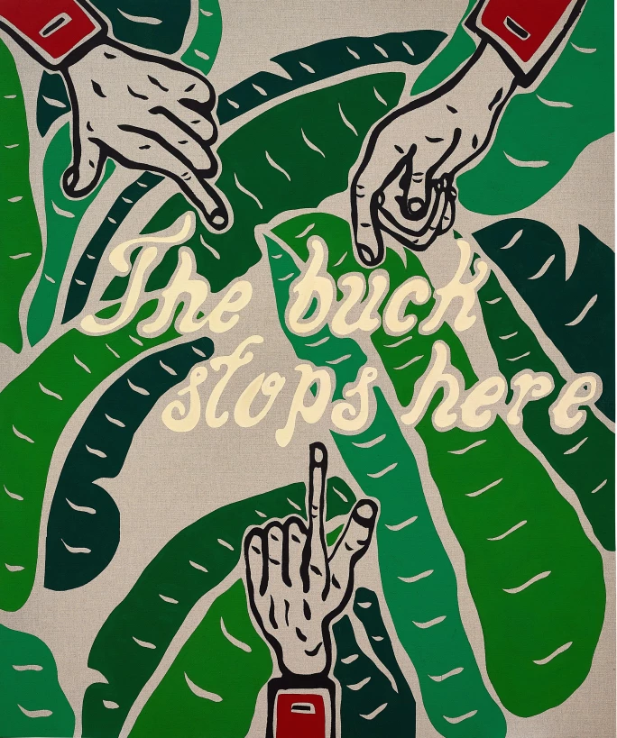
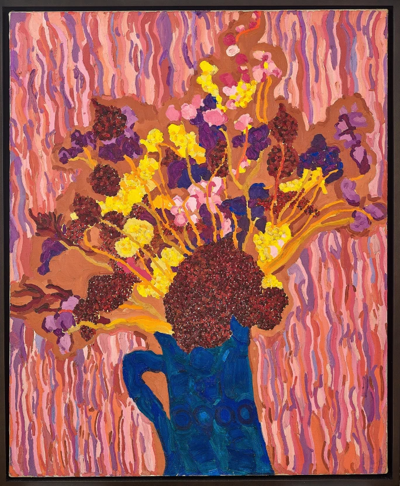
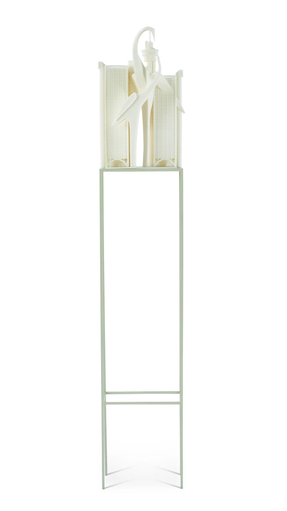
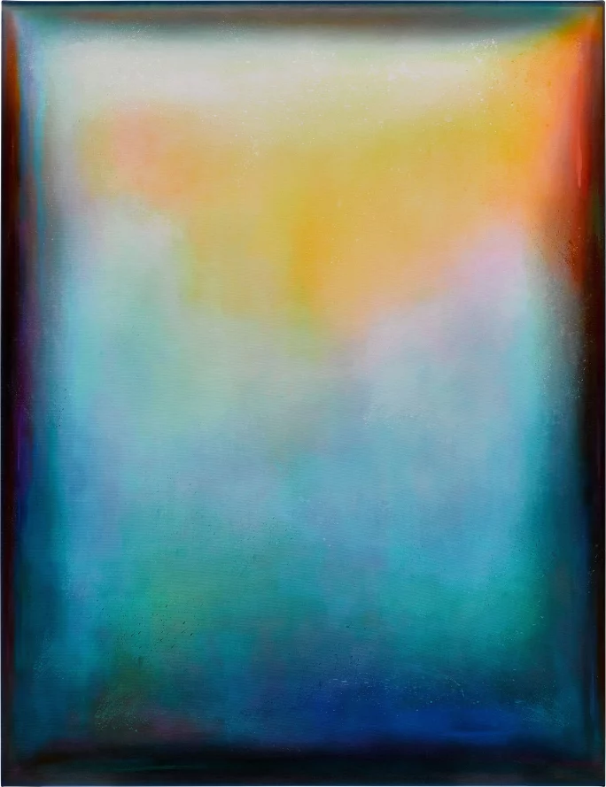

譯自 Nicholas Stephens · Sotheby's Hong Kong · 2024年2月21日
今年亞洲首場「Contemporary Discoveries」舉行在即，蘇富比當代藝術部日間拍賣及網上拍賣主管何詩慧，細選出九件不容錯過的作品。
蘇富比今年亞洲首場「Contemporary Discoveries」拍賣將在2月21日至28日期間舉行，當中不乏超現實主義風格的作品，催動我們以嶄新的視角看待世界。例如洛杉磯藝術家凱文·科斯蒂（Kevin Christy）的作品《十分之九（4號）》（2020年）中，北極藍色的指甲如匕首一樣，窒礙了我們的進步；還有在德國出生的吉妮·布裡托（Jeanine Brito）的《異曲同工》（2022年）中，起伏有致的波浪捲髮模糊或打破了記憶的既有概念。
以下是蘇富比誠意推介的九件作品。

Invader，《B52'S"》，2010 年 | 估價：650,000 – 950,000 港幣
匿名法國街頭藝術家Invader表示他的作品大多違法。不過可以放心的是，他2010年創作的《B 52'S"》縱然矚目搶眼，當中並無涉及違法行為。Invader受電子遊戲《太空入侵者》和《吃豆人》啟發，創作出遍佈全球的馬賽克作品，不但廣為大眾接受，而且備受喜愛。歷年來七度「入侵」香港，香港在他而言毫不陌生。在《B 52'S"》中，藍色、橙色和黃色的魔術方塊歡快地互相擠擁，錯落在畫面上的不同位置，構成一幅不經意的合照。魔術方塊令人想到合成器的聲音和霓虹燈，正是令人陶醉的1980年代的最佳表達。如今正是回顧Invader長達40年的創作生涯的最佳時機，座落於巴黎Rue Béranger的The Invader Space Station本月開放，九層樓高、3500平方米的《解放報》前辦公室換身一變，成為舉行Invader回顧展的空間，展出藝術家的攝影、錄像、裝置和雕塑作品。

JR，《由內而外，眼框的皺紋 #16》，2014 年 | 估價：80,000 – 150,000 港幣
法國藝術家JR的理念是記錄那些未必會在博物館出現的人。2004年至2006年間，他為巴黎住宅區的年輕人創作出廣告牌大小的肖像作品；作品被稱為「一代人的肖像」，而JR亦因而在巴黎聲名鵲起。作為街頭藝術家和攝影師，JR在2010年開始「由內到外」項目，旨在將藝術交到社區手中。在JR的水墨紙本作品《由內而外，眼框的皺紋 #16》（2014年）中，眼睛作為中心，在我們認知的世界與未知世界之間，佔有一位。事實上，眼睛是超現實主義中反覆出現的主題，不論是路易斯·布紐爾（Louis Buñuel）的經典電影《安達魯之犬》（1929年）（與薩爾瓦多·達利（Salvador Dali）合著的劇本）中割劃眼睛的場景，或是雷內·馬格利特（René Magritte）的畫作《虛假的鏡子》（1929年），眼睛都被詮釋作了解人類精神和世界的窗口。超現實主義攝影師曼·雷（Man Ray）亦曾形容《虛假的鏡子》為一幅「所看到的與被看到的一樣多」的畫作。

唐納德 · 貝奇勒，《粉紅雪糕筒》，2010 年 | 估價：120,000 – 220,000 港幣
紐約新表現主義藝術家唐納德·貝奇勒（Donald Baechler）為1980年代配樂，以雪糕筒、人臉、鮮花和沙灘波奏成一場充滿活力的交響樂。在《粉紅雪糕筒》（2010年）中，火烈鳥色的雪糕沿著雪糕筒徐徐融化，就像眼睛上方蓬鬆的瀏海一樣。令人垂涎欲滴的美食建構在貝奇勒間或稱為「白噪音」的拼貼紙上，成為作品的焦點。貝奇勒在2022年去世，作品中可見塞·托姆布雷（Cy Twombly）、喬托（Giotto）和羅伯特·勞森伯格（Robert Rauschenberg）等人的影響。

Koak，《如何忘記》，2018 年 | 估價：260,000 – 550,000 港幣
Koak在密西根州出生、現居舊金山，擅於以簡約線條，刻劃出洋溢熱情和力量的人物。《如何忘記》創於2018年，長188厘米，是一幅垂直推進的單色作品，規模宏大而構圖簡約。在忘記的路途上，重點不在抵達特定目的地，而在憑藉動力、行動和耐力，邁步前進往上。在《如何忘記》中，直線最終化成曲線，呼應Koak的雕塑語言，呈現出藝術家對未來或新人類的原型的展望與探索。

松山智一，《尊重呼吸》，2019 年 | 估價：300,000 – 500,000 港幣
松山智一出生於1976年，即日本十二生肖龍年。現居布魯克林的他在世界各地舉辦展覽，最近的亞洲展覽剛在上海寶龍博物館圓滿結束。在《尊重呼吸》（2019年）中，超現實的花園在幻覺中綻放，畫中主角沉浸在玫瑰、樹枝和雀鳥的光輝中。松山將魔幻故事和傳奇中探索之旅的氛圍，完美結合平行世界所帶來的熱情而迷幻的撫慰。如夢似幻的場景中色彩紛陳，各式顏色和形狀各自散發活力生機，吸引觀者的注意。「松山智一：虛構風景」是藝術家在日本的首個大型個展，目前在弘前煉瓦倉庫美術館舉行，將在2024年3月17日結束。

喬爾 · 梅斯勒，《無題（責無旁貸）》，2010 年 | 估價：260,000 – 450,000 港幣
喬爾·梅斯勒（Joel Mesler）在紐約經營畫廊多年，在藝壇交遊廣闊，慧眼識珠，發掘和扶攜了拉希德·約翰遜（Rashid Johnson）等眾多別具潛質的藝術家。從畫廊主人到投身成為藝術家，人生中的波折變遷以及他在不和睦的家庭中成長的經歷，或多或少成為了他的創作靈感。《無題（責無旁貸）》（2020年）中的樹葉圖樣源自比佛利山莊酒店的壁紙，正是他的一段童年回憶。畫作中寫有美國前總統杜魯門的名言，強調絕不推諉責任。三個身穿紅色夾克、只見手部的傢伙指向「責無旁貸」這個短詞，輕輕諷刺負責任的行為。今時今日，誰是話事人？

琳恩 · 德雷克斯勒，《韋弗利的花》，1985 年 | 估價：220,000 – 350,000 港幣
琳恩·德雷克斯勒（Lynne Mapp Drexler）是抽象表現主義的倡導者，而本作亦讓人想起這場1950年代末盛行的運動。她的繪畫實踐是將法國印象派的圓點轉化成紐約的網格和正方形，呼應喬治·秀拉（George Seurat）的點畫風格。鐘情1980年代電子遊戲的粉絲若仔細觀察，或會注意到作品就似像素化的前身，甚至是Invader的繪畫先驅。在《韋弗利的花》（1985年）中，形成花紋圖案的色片充滿活力，精緻的淡紫色背景在前景下方的赭色花束上傾倒灑落，而青金石藍色的花瓶則支撐起柔和模糊的扁平遠景，抓住觀者的目光，令人遙想起數百年以來，藍色在藝術史上一直舉足輕重的地位。藍色從阿富汗經威尼斯進口歐洲，向來都是最精緻和價格高昂的顏色，在畫壇中備受珍重。2023年11月，白立方畫廊宣布將在全球（美國除外）代理Lynne Drexler Archive，並計劃在2024年秋季在倫敦和香港舉辦個展。

崔潔，《西城門》，2017 年 | 估價：80,000 – 120,000 港幣
對居於上海的崔潔來說，城市環境的建築地形就是她的創作靈感。她的壓克力畫作就似未來城市的早期藍圖，當中的建築受噴射機時代的風格影響，呈現出現實中的砂礫質感，同時充滿著幻想的樂趣和嚮往。她有時會縮小建築奇觀，創作迷你版作品，《西城門》（2017年）正是一例。除了為這座位於塞爾維亞貝爾格萊德的著名野獸派地標繪製壓克力畫作，她亦以這座36層高的建築物為原型，創作出光敏樹脂立體印刷。在這座48公分高的雕塑中，深沉黃褐色的混凝土和檸檬黃色的玻璃倒影被沖擦掉，展現出一片空白光潔的板塊，意味著新生活的開始。

喬萊爾 · 阿馬羅，《疲倦的睡蓮》，2021 年 | 估價：120,000 – 220,000 港幣
喬萊爾·阿馬羅擅於打破藩籬，將數碼與傳統、攝影與繪畫巧妙糅合。如煉金術師一樣，他令色彩和物料超越本質，將畫布提煉成金屬的境界。除此以外，多才多藝的阿馬羅亦有踏足時尚界，與意大利奢華時裝品牌華倫天奴（Valentino）合作。阿馬羅在意大利南部卡拉布里亞地區出生，大學修讀建築學，曾與普立茲克獎得主法國建築師尚·努維爾（Jean Nouvel）工作。他的繪畫方式結合工業獨創和創作技法，營造出一種奇麗的錯覺。《疲倦的睡蓮》（2021年）是藝術家2022年在中國瀋陽1905藝術空間舉辦的「影與影」展覽的封面作品。畫面中可見水面下的朦朧蜿蜒，屬印象派大師克勞德·莫內（Claude Monet）的光影延續。